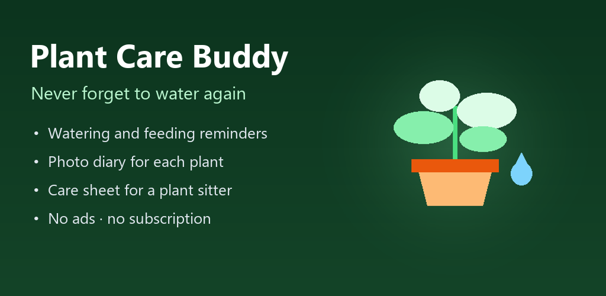
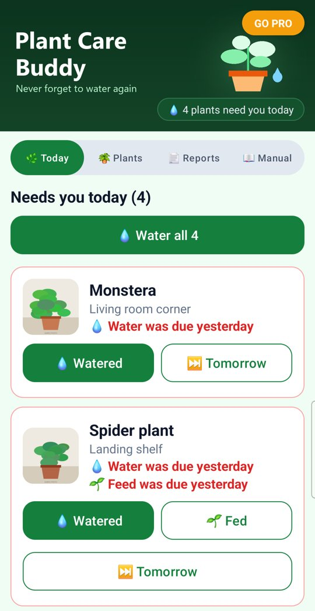
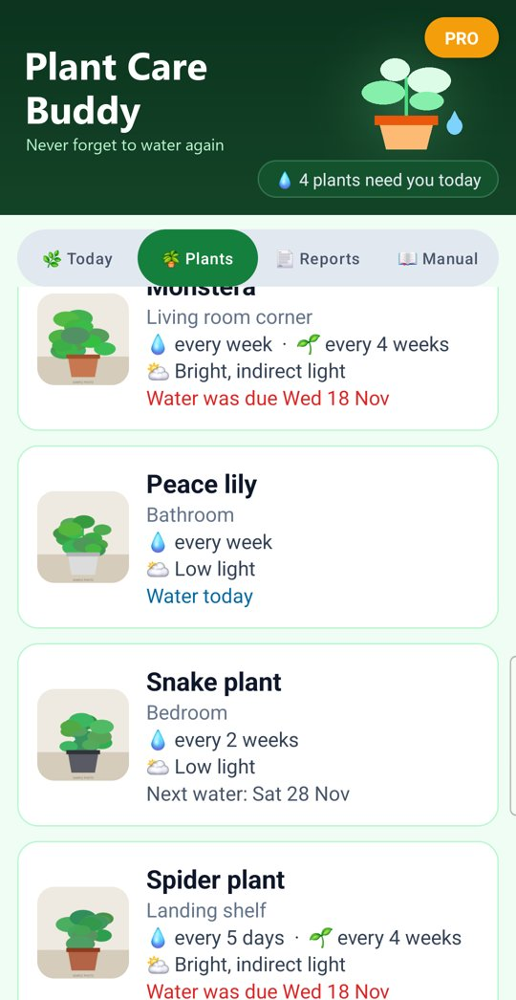
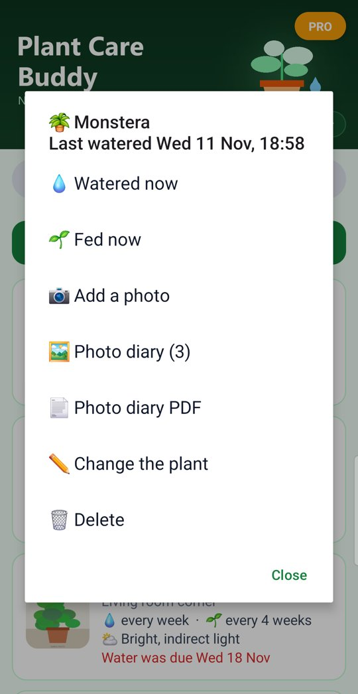
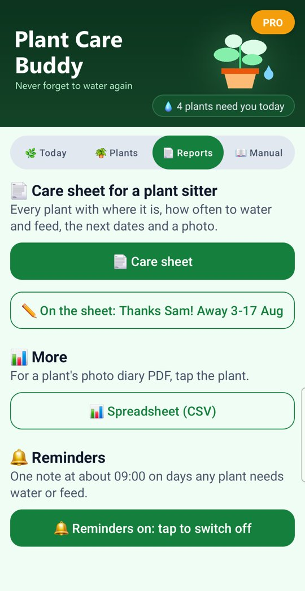

Everything below is the same text as the Manual in the app (📖 Manual tab).
Plant Care Buddy remembers when each of your plants needs water and feed, reminds you on the day, keeps a photo diary of each plant, and makes a care sheet for a friend or neighbour who looks after them while you're away.
You choose how often each plant needs water: the app doesn't identify plants or look anything up.
On 🪴 Plants, tap ＋ Add a plant. Type its name (for example "Kitchen basil") and where it is, then choose how often it needs water: tap 3, 7 or 14 days, or type your own number. If you feed it, choose how often (for example every 4 weeks in spring and summer).
Choose the light it likes, then take a photo of it, or skip it. Tap a plant later to change it, add a photo or delete it.
Most houseplants like water when the top few centimetres of soil are dry: often every 7 to 14 days, more in summer and less in winter. Herbs on a sunny windowsill and small pots dry out faster. Cacti and succulents need much less.
The reminder is a nudge: feel the soil first, and if it's still damp, tap ⏭️ Tomorrow to move the date on by one day.
Feeding reminders count from the day you switch feeding on, so a new plant isn't due a feed straight away.
The 🌿 Today tab shows the plants that need water or feed today (or were missed), and what's coming up in the next few days.
Tap 💧 Watered or 🌱 Fed when you've done it: the next date moves on from today. Tap 💧 Water all when you've watered every plant on the list.
Each plant has a light setting, with a rough guide in lux: low light (about 500–2,500 lux, a few metres from a window), bright indirect light (about 2,500–10,000 lux, near a window but out of direct sun) and bright light (about 10,000 lux or more). A light meter app can measure a spot if you're not sure.
At about 09:00, on days any plant needs water or feed, the app shows one note with their names. Android may ask you to allow notifications. If the phone was off, you get it the next morning. Switch reminders off or on in 📄 Reports.
If Android blocks the app's notifications, 📄 Reports shows 🔕 Notifications are blocked: tap it to allow them.
Tap a plant, then 📷 Add a photo, every few weeks. The photos are kept in date order, so you can see it grow or spot a problem early. Pro makes a photo diary PDF for each plant.
Free: up to 8 plants, watering and feeding reminders, photos and the care sheet. No ads.
Pro (one payment, no subscription): unlimited plants, the photo diary PDF and the spreadsheet.
Tap GO PRO at the top. Restore purchase gets Pro back on a new phone with the same Google account.
No account, no sign-in, and no ads. Your plants and photos are kept only in the app's own storage on this phone. Plant Care Buddy has no servers. A PDF or spreadsheet only leaves the phone when you share it yourself.
Google Play handles the Pro purchase.
Plant Care Buddy v1.0 (Build 1)
Publisher: AppStack Studio
| Question | Many plant apps | Plant Care Buddy |
|---|---|---|
| Reminders | Often a subscription | One note a day with the plants that need water or feed, free |
| Going away | Not covered | A care sheet for a plant sitter: where each plant is, how often, and a photo |
| Price | Free with ads or a subscription | Free for 8 plants; Pro is one payment for life (no subscription) |

1. Today
Which plants need water or feed today, with one-tap buttons.

2. Plants
Every plant with how often it needs water, feed and light.

3. Each plant
Watered, fed, photos, the photo diary and changes.

4. Reports
Care sheet for a plant sitter, spreadsheet and reminders.
Screenshots: Plant Care Buddy 1.0 on a Samsung Galaxy S24, with sample plants and drawn sample photos.